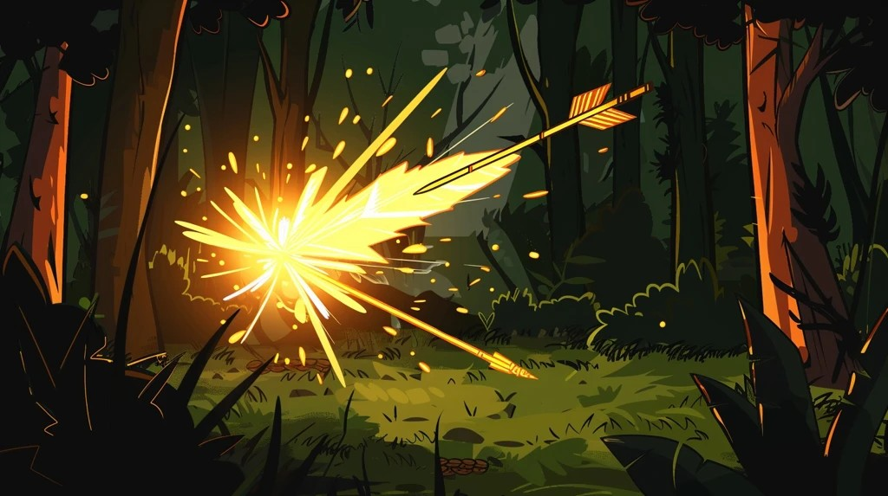

BasicShot
Slot 1 · Fcost 0 · cd 0.28s · damage 1.0× · gold visual
The default arrow. Free, snappy, on its own cooldown. The
muscle-memory shot that fires whenever your finger drifts
toward F. Cooldown scales with the fire_rate affix.